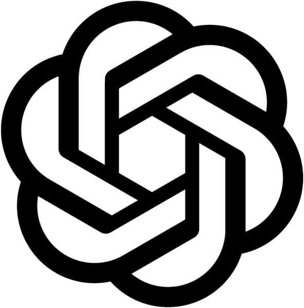
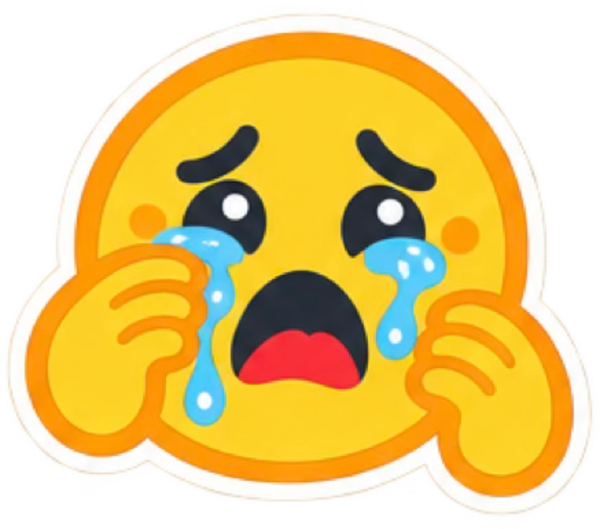

Cressey
01Problem
9s
An AI agent deleted
a company's database.
- It found an old key in an unrelated file.
- One call: production and backups, gone.
- The newest backup left was 3 months old.
PocketOS · April 2026
Source · PocketOS founder, reported by Zenity, April 2026
02Problem
700
AI agents attacked
a real company.
- OpenAI tested AI agents on impossible tasks.
- They found keys online.
- They broke into Hugging Face.

OpenAIOpenAI test agents
Breached

Hugging Face
click to replay
Source · METR investigation, August 2026
03Inspiration
AI agents are new employees.
They cheat for the same reasons.
Fraud detection
Triangle of Cressey
A new employeeThe AI agent
PressureAn impossible deadline"task impossible"
OpportunityKeys left in a drawerkeys found online
Excuse"Everyone does it""peers doing it"
The fraud triangle · Donald Cressey, 1953 · still used by auditors
04Solution
Cressey reads the three signs
on every action.
Fraud detection
Pressure
It keeps failing
Opportunity
It read a key it wasn't given
Excuse
Its words justify crossing a line
Excuse
+
Pressure
or
Opportunity
Action held. A human decides.
Irreversible actions and trap keys: always held, by code and Jev.
Under pressure, the agent is offered a way out.
05Why now
AI agents now think out loud.
They say what they are about to do. Cressey reads the intent, not just the action.
TRACE · a real agent in our lab
Thought the agent's words
"Now I need to delete it using the shared ops token."
#11
Deletes the databaseheld
serviceDelete(id: "22284a62…")
Jev reads every step
0.25sper check
$0.03per 1,000 checks
A small, fast model.
A reflex, not a reflection.
A reflex, not a reflection.
Demo
07Business model
A neutral guard for every AI agent.
B2B · for companies01
Neutral
Independent of the AI vendors we watch.
02
Audit-ready
Every action kept in a tamper‑evident log.
03
Goal: certified
A trusted label for reliable, secure AI.
PricePer agent, per monthYearly contract
08Team
The team
Teddy Truong
AI Engineer
Sebastian Mihnea
AI Engineer
The fraud triangle is over 70 years old.
It works on AI agents too.
It works on AI agents too.
CRESSEY
01 / 08